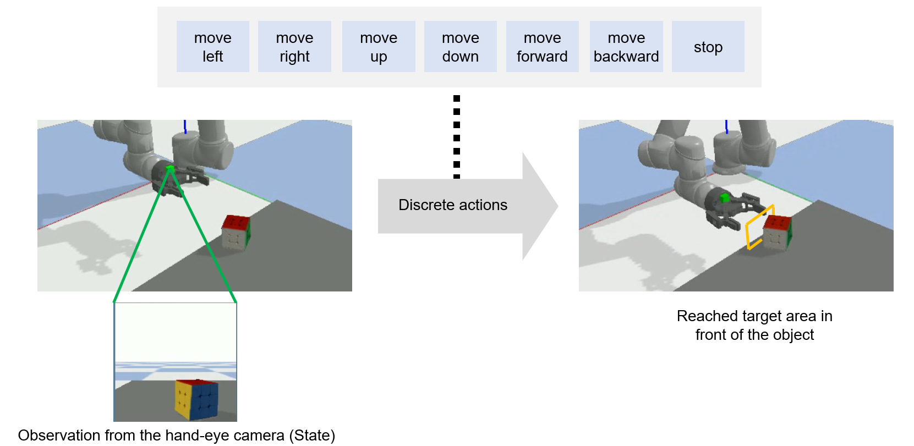

OHPL: One-shot Hand-eye Policy Learner
The control of a robot for manipulation tasks generally relies on object detection and pose estimation. An attractive alternative is to learn control policies directly from raw input data. However, this approach is time-consuming and expensive since learning the policy requires many trials with robot actions in the physical environment. To reduce the training cost, the policy can be learned in simulation with a large set of synthetic images. The limit of this approach is the domain gap between the simulation and the robot workspace.
We propose to learn a policy for robot reaching movements from a single image captured directly in the robot workspace from a camera placed on the end-effector (a hand-eye camera). The idea behind the proposed policy learner is that view changes seen from the hand-eye camera produced by actions in the robot workspace are analogous to locating a region-of-interest in a single image by performing sequential object localisation. This similar view change enables training of object reaching policies using reinforcement-learning-based sequential object localisation.
To facilitate the adaptation of the policy to view changes in the robot workspace, we further present a dynamic filter that learns to bias an input state to remove irrelevant information for an action decision. The proposed policy learner can be used as a powerful representation for robotic tasks, and we validate it on static and moving object reaching tasks.
Problem definition
We consider our approach for the task of closed-loop object reaching via discrete actions. Our 6 DoF robot arm (UR5) is equipped with a two-finger parallel gripper (Robotiq 2F-85) with a camera mounted on top indicated by the green block which we refer to as the hand-eye camera. The agent receives RGB images from the hand-eye camera at each timestep and performs an action out of a set of 7 discrete actions. The goal of the task is for the robot to reach a predefined target area in front of the object indicated by the yellow box.

Learning to reach from a single image via a proxy task
We first train the agent in the proxy task of sequential object localization using deep Q-learning. We use a convolutional neural network to represent the Q-network and we use dynamic filters as soft-attention to provide effective information as input to the Q-network for localisation. We train a separate model for each individual object which is selected from the YCB dataset. Once the agent is trained we save the model and deploy it directly to perform the object reaching task in the robot work space. The agent performs the corresponding action in the robot workspace according to the predefined mapping. The task is considered to be completed successfully when the robot moves to a target location in front of the object.
Validation: Object reaching
We validate the OHPL agent, trained from the proxy task, in a robot simulation workspace for the static and moving object reaching task in PyBullet. In the moving object reaching task, we randomise the velocity of the object in the x, y and z directions. The same success criteria from the static object reaching task is used. We also trained a model called scratch which is trained directly in the simulated robot workspace for the static object reaching task as an upper bound on the performance as there is no domain gap. Experiments are performed on all 8 objects in 3 lighting conditions and 9 starting positions. 3 trials are performed for each combination so a total of 648 experiments are performed for each model.
Example of static-object reaching
| Scratch | Scratch (with dynamic filters) | OHPL | OHPL (with dynamic filters) |
|---|---|---|---|
Example of moving-object reaching
| Scratch | Scratch (with dynamic filters) | OHPL | OHPL (with dynamic filters) |
|---|---|---|---|
Related material
Pre-print (arXiv)
OHPL: One-shot Hand-eye Policy Learner
C. Oh, Y. Pang and A. Cavallaro
IEEE International Conference on Intelligent Robots and Systems (IROS), Virtual, 27 September - 01 October 2021.
Sponsors


Partners